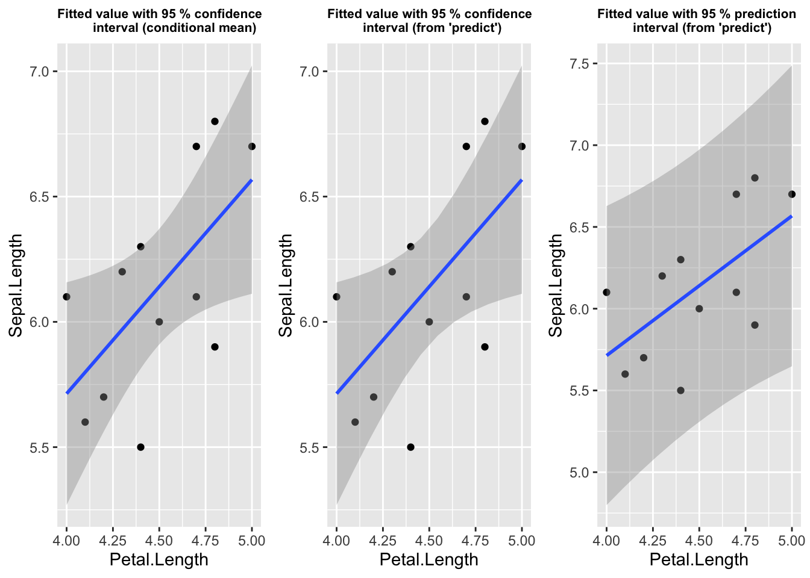
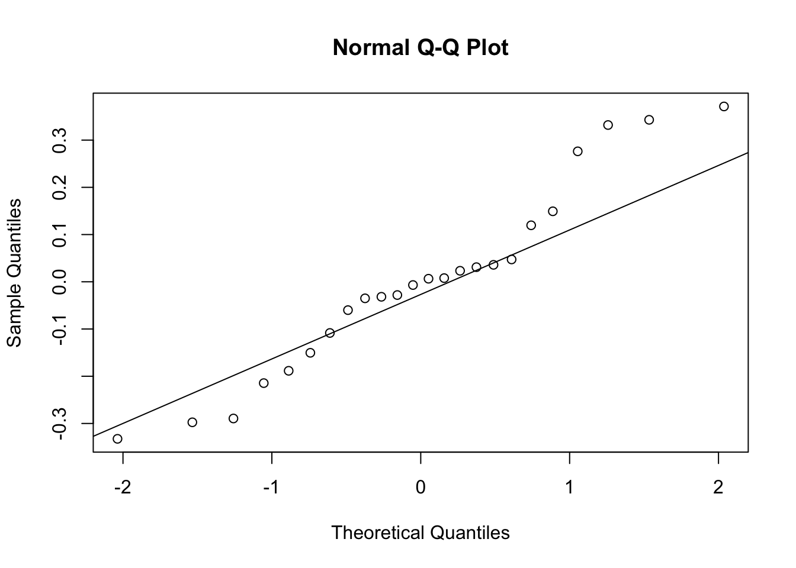
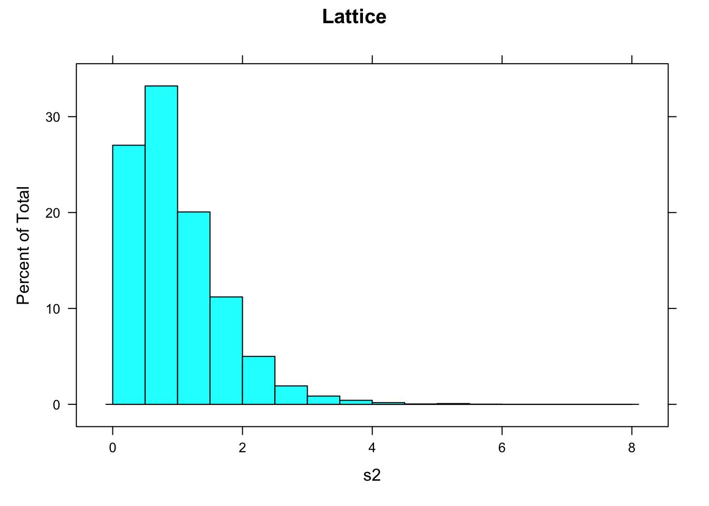

2 ggplot
2.2 Confidence bands
https://janhove.github.io/reporting/2017/05/12/visualising-models-2
2.3 Confidence bands: fitted models
Part of this comes from Gordana’s code for calculating sample size by simulation
library(dplyr)##
## Attaching package: 'dplyr'## The following object is masked from 'package:nlme':
##
## collapse## The following object is masked from 'package:MASS':
##
## select## The following objects are masked from 'package:stats':
##
## filter, lag## The following objects are masked from 'package:base':
##
## intersect, setdiff, setequal, unionlibrary(emmeans)
library(ggplot2)
library(ggpubr)
data(iris, package = "datasets")
str(iris)## 'data.frame': 150 obs. of 5 variables:
## $ Sepal.Length: num 5.1 4.9 4.7 4.6 5 5.4 4.6 5 4.4 4.9 ...
## $ Sepal.Width : num 3.5 3 3.2 3.1 3.6 3.9 3.4 3.4 2.9 3.1 ...
## $ Petal.Length: num 1.4 1.4 1.3 1.5 1.4 1.7 1.4 1.5 1.4 1.5 ...
## $ Petal.Width : num 0.2 0.2 0.2 0.2 0.2 0.4 0.3 0.2 0.2 0.1 ...
## $ Species : Factor w/ 3 levels "setosa","versicolor",..: 1 1 1 1 1 1 1 1 1 1 ...table(iris$Species)##
## setosa versicolor virginica
## 50 50 50iris_versi <- filter(iris, Species == "versicolor")
summary(iris_versi)## Sepal.Length Sepal.Width Petal.Length Petal.Width
## Min. :4.900 Min. :2.000 Min. :3.00 Min. :1.000
## 1st Qu.:5.600 1st Qu.:2.525 1st Qu.:4.00 1st Qu.:1.200
## Median :5.900 Median :2.800 Median :4.35 Median :1.300
## Mean :5.936 Mean :2.770 Mean :4.26 Mean :1.326
## 3rd Qu.:6.300 3rd Qu.:3.000 3rd Qu.:4.60 3rd Qu.:1.500
## Max. :7.000 Max. :3.400 Max. :5.10 Max. :1.800
## Species
## setosa : 0
## versicolor:50
## virginica : 0
##
##
## iris_versi$Species <- factor(iris_versi$Species)
nsamp <- 12
iris_versi_samp <- sample(1:50, size = nsamp, replace = F)
pilot <- iris_versi[iris_versi_samp, ]
## Gordana's simulation code
pilot_mod <- lm(Sepal.Length ~ Petal.Length, data = pilot)
summary(pilot_mod)##
## Call:
## lm(formula = Sepal.Length ~ Petal.Length, data = pilot)
##
## Residuals:
## Min 1Q Median 3Q Max
## -0.55503 -0.20189 -0.00401 0.28040 0.40327
##
## Coefficients:
## Estimate Std. Error t value Pr(>|t|)
## (Intercept) 2.2963 1.5615 1.471 0.1721
## Petal.Length 0.8542 0.3469 2.463 0.0335 *
## ---
## Signif. codes: 0 '***' 0.001 '**' 0.01 '*' 0.05 '.' 0.1 ' ' 1
##
## Residual standard error: 0.3587 on 10 degrees of freedom
## Multiple R-squared: 0.3775, Adjusted R-squared: 0.3153
## F-statistic: 6.065 on 1 and 10 DF, p-value: 0.03352confint(pilot_mod) ## 2.5 % 97.5 %
## (Intercept) -1.18287605 5.775549
## Petal.Length 0.08135977 1.627136fit_gg <- ggplot(pilot, aes(x = Petal.Length,
y = Sepal.Length)) +
geom_point() +
geom_smooth(method = "lm") +
ggtitle("Fitted value with 95 % confidence
interval (conditional mean)") +
theme(plot.title = element_text(size = 8, face = "bold"))
print(fit_gg)## `geom_smooth()` using formula 'y ~ x'
Check type of band (confidence or prediction) on above ggplot
# range of petal length
my_range <- range(pilot$Petal.Length)
X_pred <- seq(my_range[1], my_range[2], length = 12)
yhat_conf <- data.frame(
predict(pilot_mod, interval = "confidence",
newdata = data.frame(Petal.Length = X_pred)))
names(yhat_conf) <- c("yhat_conf_fit", "yhat_conf_lwr", "yhat_conf_upr")
yhat_pred <- data.frame(
predict(pilot_mod, interval = "prediction",
newdata = data.frame(Petal.Length = X_pred)))
names(yhat_pred) <- c("yhat_pred_fit", "yhat_pred_lwr", "yhat_pred_upr")
yhat_all <- data.frame(Petal.Length = X_pred, yhat_conf, yhat_pred[ , -1])
names(yhat_all)[names(yhat_all) %in% "yhat_conf_fit"] <- "Sepal.Length"
## Add to sample data
pilot$X_pred <- X_pred
pilot <- data.frame(pilot, yhat_conf)
pilot <- data.frame(pilot,
yhat_pred_lwr = yhat_pred$yhat_pred_lwr,
yhat_pred_upr = yhat_pred$yhat_pred_upr)
## Plot fitted values and intervals from "predict" function
fit_conf <- ggplot(pilot, aes(x = Petal.Length, y = Sepal.Length)) +
geom_point() +
geom_smooth(
data = yhat_all, aes(ymin = yhat_conf_lwr,
ymax = yhat_conf_upr),
stat = "identity") +
ggtitle("Fitted value with 95 % confidence
interval (from 'predict')")+
theme(plot.title = element_text(size = 8, face = "bold"))
fit_pred <- ggplot(pilot, aes(x = Petal.Length, y = Sepal.Length)) +
geom_point() +
geom_smooth(data = yhat_all, aes(ymin = yhat_pred_lwr,
ymax = yhat_pred_upr),
stat = "identity") +
ggtitle("Fitted value with 95 % prediction
interval (from 'predict')")+
theme(plot.title = element_text(size = 8, face = "bold"))
ggarrange(fit_gg, fit_conf, fit_pred, ncol = 3)## `geom_smooth()` using formula 'y ~ x'
2.4 Histogram
2.4.1 Histogram: one vector of values
## Histogram of one vector of values in ggplot2
## Generate a vector of values
s2 <- numeric(5000)
for(i in 1:5000) {
dd <- rnorm(5, 10, 1)
s2[i] <- var(dd)
rm(dd)
}
summary(s2)## Min. 1st Qu. Median Mean 3rd Qu. Max.
## 0.005382 0.471170 0.836438 0.990317 1.337797 5.828510Data in numeric vector
## Data in numeric vector
ggplot() +
aes(s2) +
geom_histogram(binwidth = 0.5)
Data in single-column data frame - Y axis is frequency
## Data in single-column data frame
s2.df <- data.frame(var = s2)
## Y axis is frequency
ggplot(s2.df, aes(x = var)) +
geom_histogram(breaks = 0:16*0.5, col = "black",
fill = "grey70")
Data in single-column data frame - Y axis is density
## Y axis is density
ggplot(s2.df, aes(x = var, y = ..density..)) +
geom_histogram(breaks = 0:16*0.5, col = "black",
fill = "grey70")For comparison, histogram in lattice
## Lattice
histogram(s2, breaks = 0:16*0.5, right = F, main = "Lattice")
range(s2)## [1] 0.005382409 5.8285104862.5 Density plot
## Density plot
ggplot(s2.df, aes(x = var)) +
geom_density()
For comparison, density plot in base graphics and in lattice
## Density plot - base graphics
plot(density(s2), main = "Base graphics")
## Density plot - lattice
densityplot(s2, plot.points = F, main = "Lattice")
2.6 Plot structure
ggplot_build(p_obj)$data2.7 Label legend
guides(fill = guide_legend(title = "Gender"))2.8 Plot title
theme(plot.title = element_text(size = 11))2.9 Three-category colours
scale_fill_manual(values = c("#f8766d", "#00bfc4", "#b79f00")2.10 Set breaks for scale
scale_y_continuous(breaks = seq(0, 12, by = 2)) 2.11 Display table to 2 d.p.
mutate_if(is.numeric, ~ round(., 1)) %>%
kable()2.12 Redefine factor levels for an individual plot
nt_youth_all_indiv %>%
mutate(Race.nat = factor(
Race.nat,
levels = c("CALD", "Indigenous", "Caucasian", "Not recorded"))) %>%
group_by(Care_status, Race.nat) %>%
summarise(n_indiv = n_distinct(MP_id)) %>%
ggplot( etc. )2.13 Plotting two data sets of different length on one plot
https://gist.github.com/romunov/47f51ccdfe2362c66e60743849fde6b0
xy1 <- data.frame(x = rnorm(10), y = rnorm(10))
xy2 <- data.frame(x = rnorm(5), y = rnorm(5))
library(ggplot2)
ggplot() +
theme_bw() +
geom_point(data = xy1, aes(x = x, y = y)) +
geom_point(data = xy2, aes(x = x, y = y), color = "red")
ggplot(xy1, aes(x = x, y = y)) +
theme_bw() +
geom_point() + # values mapped to aes() in ggplot() call
geom_point(data = xy2, color = "red") # values maped to the same aes() call as above
ggplot(xy1, aes(x = x, y = y)) +
theme_bw() +
geom_point() + # values mapped to aes() in ggplot() call
geom_point(data = xy2, aes(x = x, y = y)) # explicit mapping, can be different for this geom
## PGS' extra
ggplot(xy1, aes(x = x, y = y)) +
theme_bw() +
geom_point() + # values mapped to aes() in ggplot() call
geom_point(
data = xy2, aes(x = x, y = y), colour = "green") # explicit mapping, can be different for this geom